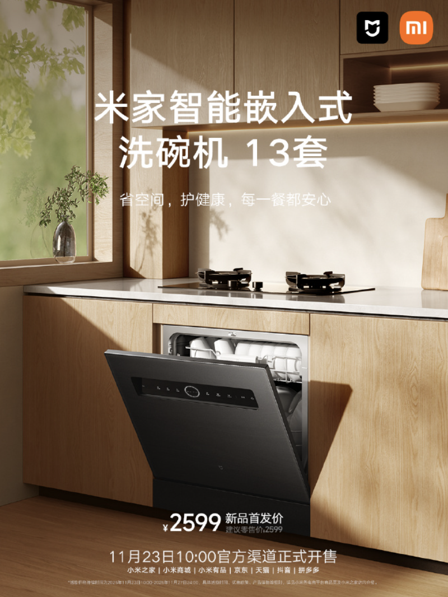

厨房智能硬件 / 空间与品类创新
洗碗机走到灶台下：米家 13 套新品公布开售时间
米家推出灶下嵌入式 13 套机型，11 月 23 日开售、报道价 2599 元；嵌入位置带来空间新解，也让安装适配成为关键。

小米智能生态官方微博宣布，米家智能嵌入式洗碗机灶下 13 套将于 11 月 23 日 10:00 开售，报道价为 2599 元。IT之家转述的产品资料称，机器内腔容积 104L，支持 75℃ 高温洗涤、双锅同洗、红酒杯架和洗后智能开门烘干；除菌率 99.99% 与水效等级等指标来自品牌公布信息，尚非独立测试结论。
这款产品的重点不只是容量，而是把洗碗机安置在灶台下方，以释放台面或其他柜体空间。灶下嵌入会牵涉橱柜尺寸、散热、进排水、电源和灶具布局，不能只凭宣传图判断适配。选购和设计阶段应按官方安装手册复核开孔与安全间距，再评估全套锅碗是否能一次装载。
IT之家｜米家智能嵌入式洗碗机灶下 13 套发售报道 · 2026-11-17 14:37（北京时间）IT之家报道内的小米米家产品宣传图 · 随 2026-11-17 报道展示IT之家报道：11月17日14:37（北京时间），窗口内；官方微博公告由媒体转述。